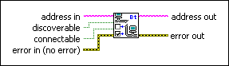
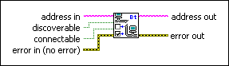

Bluetooth Set Mode VI
Owning Palette: Bluetooth VIs and Functions
Requires: Base Development System (Windows)
Sets the discoverable and connectable status of the local Bluetooth device.

 Add to the block diagram Add to the block diagram |
 Find on the palette Find on the palette |
Owning Palette: Bluetooth VIs and Functions
Requires: Base Development System (Windows)
Sets the discoverable and connectable status of the local Bluetooth device.

| Add to the block diagram |
Find on the palette |
 |
address in specifies the Bluetooth address of the local device. If you do not specify an address, this VI attempts to set the discoverable and connectable modes of all local devices. |
 |
discoverable determines if the device allows other Bluetooth devices to discover the device. The default is TRUE. |
|
connectable determines if the device allows other Bluetooth devices to connect to the device. The default is TRUE. If discoverable is TRUE and connectable is FALSE, the VI returns an error. |
 |
error in describes error conditions that occur before this node runs. This input provides standard error in functionality. |
 |
address out returns the same address as address in. |
 |
error out contains error information. This output provides standard error out functionality. |